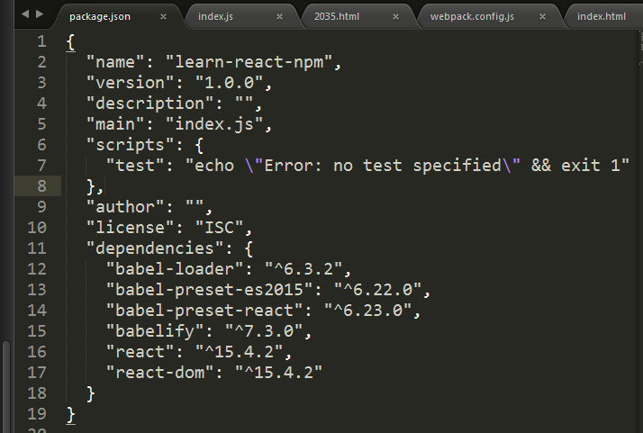
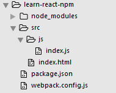
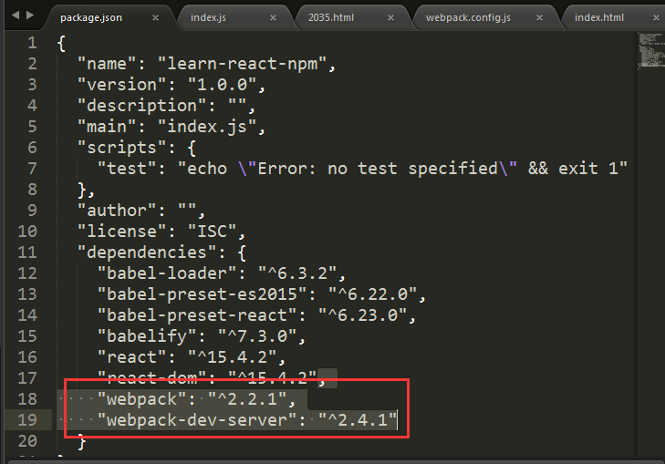

生成package.json及配置基本信息
执行npm init，生成package.json，设置项目名、项目描述等
安装react依赖包
npm install --save react react-dom babel-loader babelify babel-preset-react
如果项目中使用es2015，安装依赖包
npm install --save babel-preset-es2015
此时package.json配置信息如下

在项目中添加以下文件：src、src/index.html、src/js/index.js。如下图所示

index.html代码：
<div id="example">123</div>
index.js代码
var React = require('react')
var ReactDom = require('react-dom')
ReactDom.render(
<h1>hello world</h1>,
document.getElementById('example')
)
如果在index.html中引入index.js肯定显示123，而且会报错
接下来介绍如何使用webpack打包文件，使index.html页面输出hello world
全局安装webpack和webpack-dev-server
npm install webpack webpack-dev-server -g
本地安装webpack和webpack-dev-server并添加到依赖项
npm install webpack webpack-dev-server --save
此时package.json文件

在项目跟目录新建webpack.config.js文件，代码如下
var webpack = require('webpack');
var path = require('path');
module.exports = {
context: __dirname + '/src',
entry: "./js/index.js",
module: {
loaders: [
{
test: /\.js?$/,
exclude: /(node_modules)/,
loader: 'babel-loader',
query: {
presets: ['react', 'es2015']
}
}
]
},
output: {
path: __dirname + '/src/',
filename: "bundle.js"
}
}
上面这段代码大概意思是，引入webpack和path模块，打包的源文件是src/js/index.js，检测.js文件忽略node—modules里面的文件，用babel-loader解析，加载react和es2015的模块，打包的输出文件是src下的bundle.js。
执行webpack
发现src下多了一个bundle.js，然后在index.html中引入这个js文件。打开此页面会看到页面显示hello world。
执行webpack --watch
检测文件是否修改，如果修改将重新打包
执行webpack-dev-server --content-base src --inline --hot
打开http://localhost:8080，如果修改了文件，浏览器会实时刷新。
cnpm init
如果没有把webpack安装到全局，执行cnpm webpack webpack-dev-server -g
cnpm install --save react react-dom babel-loader babelify babel-preset-react babel-preset-es2015 webpack webpack-dev-server
新建webpack.config.js文件，并添加上面配置